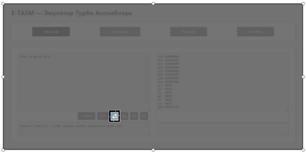

Добро пожаловать
При переходе по ссылке на сайт пользователь сталкивается с его главной страницей, которая для неподготовленного зрителя переполнена информацией. Чтобы решить данную ситуацию рекомендуется перейти на страницу «Инструкция» через главное меню данного сайта. Инструкция включает в себя: описание всех страниц сайта, в том числе и страницы с эмулятором ассемблерного кода; рекомендации по использованию эмулятора и по решению возникших ошибок при работе с эмулируемой средой (см. рисунок 1).
Рисунок 1 — Страница «Инструкция»
Конечный раздел страницы «Инструкция» содержит перечень дополнительных материалов в виде ссылок для последующего изучения ассемблера (см. рисунок 2).
Рисунок 2 — Элемент «Ссылки и приложения»
1. Страница «Эмулятор»
Начните ваш путь в мир ассемблерного программирования с легкостью и удобством. На главной странице «Эмулятор» (см. рисунок 3) имеется три основных раздела с информацией: главное меню (см. рисунок 6), поле для ввода ассемблерного кода (см. рисунок 4), и поле для вывода результата исполнения кода (см. рисунок 5).
Рисунок 3 — Страница «Эмулятор»
Рисунок 4 — Элемент «Текстовые поля для ввода кода»
Рисунок 5 — Элемент «Текстовые поля для вывод результатов выполенния кода»
1.1. Элемент «Меню»
Главное меню будет сопровождать нас на каждой страницы и каждая кнопка является новым разделом с новой информацией (см. рисунок 6).
Рисунок 6 — Элемент «Главное меню»
Кнопка «Эмулятор» выполняет переход на страницу, на которой возможна работа с ассемблерным кодом (см. рисунок 7).
Рисунок 7 — Элемент «Эмулятор
Кнопка «Инструкция» выполняет переход на страницу с необходимыми инструкциями для работы с ассемблером на данном сайте и за его пределами (см. рисунок 8).
Рисунок 8 — Элемент «Инструкция
Кнопка «Команды» выполняет переход на страницу со списком поддерживаемых команд в рамках данного эмулятора, а также примеры с их практическим использованием и прочей информацией для упрощения работы с ассемблером (см. рисунок 9).
Рисунок 9 — Элемент «Команды»
Кнопка «Контакты» выполняет переход на страницу, на которой размещена информация для связи с разработчиком (см. рисунок 10). На странице приведен пример сообщения (в виде QR-кодов), которое необходимо направить по указанным контактным данным для устранения возникшей неисправности.
Рисунок 10 — Элемент «Контакты»
1.2. Элемент «Ввод программы»
Для написания ассемблерного кода и последующей с ним работы будет использоваться специализированное текстовое поле с панелью инструментов, закреплённой в нижней части данного элемента (см. рисунок 11).
Рисунок 11 — Элемент «Ввод программы»
Если ассемблерный код уже написан в специализированном текстовом поле, то рекомендуется использовать кнопку «Compile» для выполнения откладки (см. рисунок 12).
Рисунок 12 — Элемент «Отладка»
По результатам выполнения отладки в текстовом поле ниже появится соответствующее сообщения о наличии или отсутствии ошибок (см. рисунок 13).
Рисунок 13 — Элемент «Поле для поиска ошибок в ассемблерном коде»
Если ошибок нет, то далее рекомендуется нажать кнопку «Run» для выполнения ассемблерного кода (см. рисунок 14). Результат выполнения программы выводится в специализированные поля.
Рисунок 14 — Элемент «Запуск»
Если написанный ассемблерный код необходимо скопировать, рекомендуется использовать кнопку «Копировать» (см. рисунок 15).

Рисунок 15 — Элемент «Копировать»
Если уже есть скопированный ассемблерный код и его необходимо корректно вставить в специализированное поле, то рекомендуется использовать кнопку «Вставить» (см. рисунок 16).
Рисунок 16 — Элемент «Вставить»
Если функции копирования недостаточно, то рекомендуется использовать кнопку «Скачать» (см. рисунок 17). После нажатия последует скачивание файла «program.asm», который будет содержать введённый в специализированное текстовое поле ассемблерный код.
Рисунок 17 — Элемент «Сохранить»
Если же необходимо очистить текстовое поле для ввода ассемблерного кода от всей указанной в нём информации, то рекомендуется использовать кнопку «Очистить» (см. рисунок 18).
Рисунок 18 — Элемент «Очистить»
1.3. Элемент «Вывод результата выполнения программы»
Для просмотра результатов выполнения ассемблерного кода на сайте предусмотрено текстовое поле с эмулированием регистров (см. рисунок 19). Основные регистры для работы: ah, al, bh, bl, ch, cl, dh, dl.
Рисунок 19 — Элемент «Вывод результата выполнения программы»
Если в программе используются переменные, то по результатам выполнения ассемблерного кода все переменные будут отображены в специализированное текстовое поле (см. рисунок 20).
Рисунок 20 — Элемент «Вывод переменных»
Советы и рекомендации
При нажатии на кнопку «Run» временами может возникать ошибка общего характера «Internet Sever Error». Ошибка является общей и возникает в результате некорректной работы вводимого ассемблерного кода (см. рисунок 21).
Рисунок 21 — Элемент «Вывод результата выполнения программы»
В рамках устранения данной ошибки рекомендуется вернуться на одно действие назад (см. рисунок 22), дабы сохранить вводимый код. Как только код вновь отобразится, рекомендуется проверить его на наличие ошибок согласно информации со страницы «Команды».
Рисунок 22 — Элемент «Вывод результата выполнения программы»
2. Страница «Команды»
При переходе во вкладку меню «Команды» начинает отображаться страница (см. рисунок 23), состоящая из трёх основных разделов: меню, боковая панель навигации и главный контейнер с информацией о доступных команды.
Рисунок 23 — Страница «Команды»
Боковая панель навигации по материалам данной страницы (см. рисунок 24).
Рисунок 24 — Элемент «Навигация»
Главный контейнер данной страницы (см. рисунок 25), который хранит в себе информацию о поддерживаемых командах настоящего эмулятора.
Рисунок 25 — Элемент «Таблица доступных команд»
2.1. Элемент «Навигация»
Инструкция "Навигация"
2.2. Элемент «Таблица команд»
Инструкция "Таблица команд"
3. Страница «Контакты»
Если вдруг найдена ошибка, не предусмотренная внутри эмулятора и ничего не помогает её решить – страница «Контакты» поможет напрямую связаться для отладки сайта в дальнейшем, дабы новых ошибок избежать. (см. рисунок Х)
Рисунок X — Страница «Контакты»
В левой части страницы предоставлена ознакомительная информация, электронная почта и телефон (см. рисунок Х), используемый в момент тестирования сайта. Для дальнейшей связи рекомендуется использовать электронную почту.
Рисунок X — Элемент «Ознакомительная информация»
В правой же части сайта находятся QR-коды (см. рисунок Х), при считывании которых произойдёт переход в приложение электронной почты и последующее автоматическое создание определённых писем
Рисунок X — Элемент «QR-коды»
Ссылки и приложения
- Видеоролик «Архитектуара компьютера»
- Плейлист «Уроки по ассемблеру (TASM)»
- Презентация «Отладчик в Far Manager»
- Презентация «Создание файла в Far Manager»